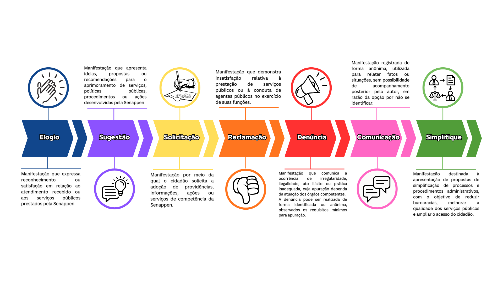
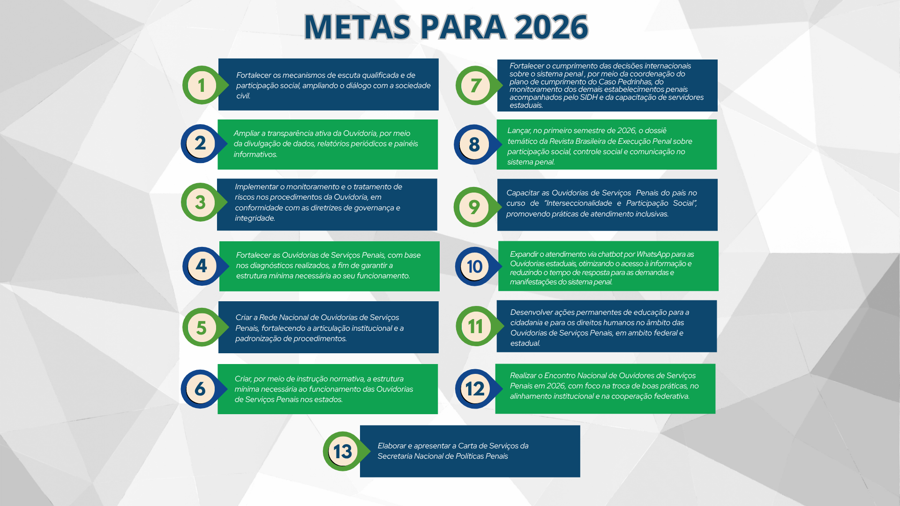

Rede de Ouvidorias
Iniciativa do Plano Pena Justa voltada à cooperação federativa, à harmonização de procedimentos e ao fortalecimento da proteção de direitos no âmbito das Ouvidorias de Serviços Penais.
Prévia local para orientação da DCOM. Implementar no gov.br/SENAPPEN com os componentes oficiais já disponíveis no Plone.
Canal oficial da Senappen para escuta, transparência, participação social e encaminhamento de manifestações relacionadas aos serviços penais.
A Ouvidoria Nacional de Serviços Penais (Onasp), vinculada à Secretaria Nacional de Políticas Penais (Senappen) e integrante do Sistema de Ouvidorias do Poder Executivo Federal, promove a participação social e a defesa dos direitos dos servidores, das pessoas em cumprimento de pena, dos egressos e de seus familiares. Atua no recebimento, tratamento e encaminhamento de manifestações, por meio do canal Fala.BR (elogios, sugestões, solicitações, reclamações e denúncias), visando o fortalecimento do controle social, a melhoria contínua dos serviços penais e o monitoramento dos estabelecimentos prisionais do país.
A Ouvidoria também é responsável pelo Serviço de Informações ao Cidadão (SIC). Por meio da Lei de Acesso à Informação (LAI), você pode solicitar dados e documentos de acesso público através da plataforma Fala.BR. Sua demanda será analisada pela nossa equipe e encaminhada ao setor responsável para que você receba a resposta adequada.
A Ouvidoria Nacional de Serviços Penais (Onasp/Senappen) é o canal oficial para o registro de manifestações relacionadas aos serviços públicos prestados no âmbito do sistema penal federal e estadual. Por meio das categorias abaixo, todo cidadão pode encaminhar elogios, sugestões, solicitações, reclamações, denúncias, comunicações ou propostas de simplificação, contribuindo para a transparência, o controle social e a melhoria dos serviços públicos.

Iniciativa do Plano Pena Justa voltada à cooperação federativa, à harmonização de procedimentos e ao fortalecimento da proteção de direitos no âmbito das Ouvidorias de Serviços Penais.
Espaço da Equipe de Monitoramento e Acompanhamento das decisões e deliberações do SIDH, dedicado a fortalecer o cumprimento das determinações do Sistema Interamericano de Direitos Humanos em face do sistema penal brasileiro.
Ambiente dedicado integralmente ao Plano, que disponibiliza o acesso a cronogramas, documentos técnicos e relatórios de acompanhamento.
Em parceria com a Espen e a DCOM, a Onasp lança edição da Revista Brasileira de Execução Penal. Com o tema voltado à participação e transparência, a publicação reúne artigos e estudos que fortalecem o controle social e consolidam a Ouvidoria como ponte entre o Estado e a sociedade.
Alinhada às diretrizes de modernização da Secretaria Nacional de Políticas Penais, a Onasp apresenta seu Plano de Metas para o ciclo 2026. Este planejamento estratégico estrutura-se em eixos fundamentais: inovação tecnológica no atendimento, fortalecimento da governança federativa e educação continuada em cidadania. As ações listadas abaixo representam o compromisso público da Ouvidoria com a eficiência da gestão e a garantia de direitos no sistema penal.

O Relatório de Gestão é o principal instrumento de transparência pública e prestação de contas da ONASP à sociedade.
Este documento consolida, anualmente, as ações estratégicas voltadas ao aprimoramento do controle social, à melhoria das condições estruturais das ouvidorias estaduais e ao aumento da fiscalização sobre denúncias e solicitações.
Ao disponibilizar esses dados, permitimos que cidadãos, pesquisadores e órgãos de controle acompanhem a evolução das políticas penais e os avanços efetivos na defesa de direitos dentro do sistema prisional.
O Painel de Tratamento de Demandas da Ouvidoria Nacional de Serviços Penais (Onasp) é uma ferramenta de transparência ativa e gestão estratégica. Por meio de tecnologia de Business Intelligence (BI), o painel permite ao cidadão pesquisar e visualizar estatísticas atualizadas sobre as manifestações recebidas (denúncias, reclamações, solicitações, sugestões e elogios), monitorando os indicadores de desempenho e os temas mais recorrentes no sistema penal. A base de dados contempla registros a partir de janeiro de 2023, sendo atualizada periodicamente para garantir o controle social efetivo.